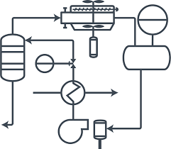
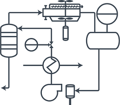

4. Imágenes
Imágenes con Diferentes Formatos
JPEG:
PNG:

GIF:
Los formatos de imagen tienen diferentes propósitos:
- JPEG: Ideal para fotografías o imágenes con muchos colores debido a su compresión con pérdida, lo que reduce el tamaño del archivo.
- PNG: Adecuado para imágenes con fondo transparente o gráficos que requieren mayor calidad y detalles.
- GIF: Se utiliza para imágenes animadas o gráficos simples con pocos colores.
Imágenes como Enlaces
Haz clic en la siguiente imagen para ir a Google:

Imágenes con Texto Alternativo
A continuación se presentan algunas imágenes con texto alternativo. Si desactivas las imágenes en tu navegador, verás el texto alternativo:
 

Uso de Imágenes en Miniatura
Haz clic en las miniaturas para ver las imágenes en tamaño completo: